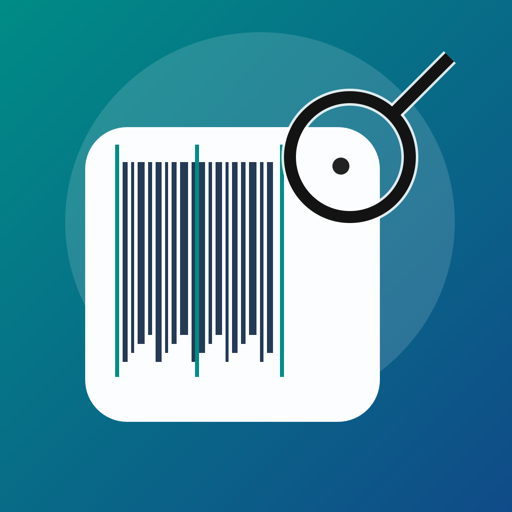

Vyvíjíme praktické aplikace a hry pro iPhone, iPad, Mac a Apple TV. Pomáháme se správou 3D tisku, skenováním čárových kódů i odpočinkem u oblíbené hry. A tvoříme také modely pro 3D tisk.
Praktické aplikace i zábava na vašich zařízeních. U každé aplikace najdete podporovaná zařízení.
Praktické aplikace
02 aplikace

Vyrobeno
iOS · Nástroje
Vyrobeno je rychlá iOS aplikace pro skenování EAN/UPC kódů. Po naskenování
zobrazí zemi, kde byl výrobek podle kódu zaregistrován, včetně vizuálního
označení vlajkou. Hodí se pro každého, kdo chce při nákupu rychle získat
orientační informaci o původu kódu přímo v telefonu.
SpoolGuard je macOS aplikace pro přehlednou správu filamentů a tisků. Umožňuje evidovat cívky, sledovat spotřebu
materiálu a mít pod kontrolou zásoby i náklady bez zbytečně složitého systému.
Generátor Osmisměrky je česká slovní hra pro iPhone, iPad, Mac a Apple TV. Nabízí tři
obtížnosti, slova ukrytá ve všech osmi směrech a tajenku složenou ze zbývajících
písmen. Můžete si vytvořit také vlastní tajenku a na iPhonu, iPadu nebo Macu
osmisměrku uložit jako PDF, sdílet či vytisknout.
Česká dáma přináší tradiční českou turnajovou variantu na iPhone, iPad a Apple TV.
Zahrajte si proti počítači nebo ve dvou na jednom zařízení. Hra dodržuje povinné
braní, prioritu dámy, vícenásobné skoky i pravidla létající dámy a nabízí přehledné
ovládání pro rychlé i taktické partie.
Zápalky - LG je jednoduchá strategická hra pro iPhone, iPad a Apple TV.
Proti počítači nebo druhému hráči postupně odebíráte 1 až 3 zápalky
z celkových 21. Dávejte ale pozor – kdo vezme poslední zápalku, prohrává.
SaurusWar je rychlá dinosauří karetní hra pro iPhone, iPad a Apple TV. Oproti klasické Válce nerozhoduje jen vyšší karta, takže
partie není předem ztracená hned od začátku. Výsledkem je svižná a jednoduše pochopitelná hra s větším napětím.
Lízaný Mariáš přináší klasickou českou karetní hru v moderním zpracování
pro iPhone, iPad a Apple TV. Hraje se ve 2 hráčích se 32 kartami, rozdává se
po 4 kartách a hra klade důraz na správné přebíjení, hlášky i taktické dohrání
rozdání. Ideální volba pro hráče, kteří chtějí tradiční pravidla, plynulé ovládání
a rychlé partie v digitální podobě.
Praktické díly a doplňky pro domov i dílnu. Naše modely pro 3D tisk najdete na Printables, kde si můžete prohlédnout podrobnosti a stáhnout tiskové soubory.